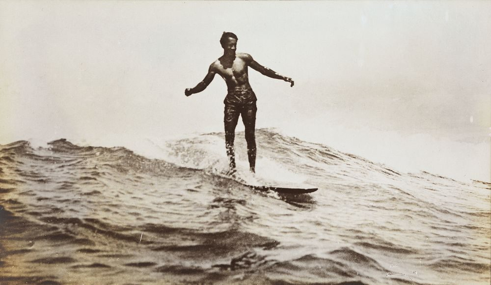

O surf surgiu na Polinésia Antiga, onde foi criado como uma forma de lazer e praticado no Havaí. A atividade se tornou um esporte de elite na realeza havaiana. No século XX foi importante na história do surf, nos anos 1900, o Surf ainda era uma prática regional, ainda concentrada no Havaí. A popularidade desse esporte começou a crescer quando Duke Kahamamoku fez diversas apresentações de surf ao redor do mundo com eventos esportivos na Austrália e EUA.
A prática do surf ganhou força na década de 1950 com soldados americanos que exploravam as ondas do Rio de Janeiro, a cultura se consolidou como cultura e esporte nos anos de 1960 e 1970, com o surgimento de competições e a criação da indústria de surfwear. Nos anos 2000 o Brasil se torna uma potência no cenário mundial de surf, com surfistas como Gabriel Medina conquistando inúmeros títulos. O surf virou símbolo de liberdade, natureza e estilo de vida saudável, favorecendo a imagem do surf como parte da identidade litorânea do Brasil

O surf combate o estresse e ansiedade, pois exige foco total no momento presente, devido ao contato com a natureza, que tem efeitos relaxantes e promove a liberação de endorfinas.

O surf pode melhorar significativamente o humor e a qualidade do sono, graças à combinação de atividade física intensa, contato com a natureza e estímulos sensoriais derivados do ambiente marítimo.

A prática do surf está fortemente relacionado ao aumento de autoconfiança e concentração devido á combinação de desafio físico, imersão na natureza e exigências cognitivas